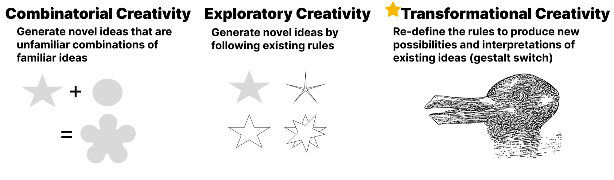
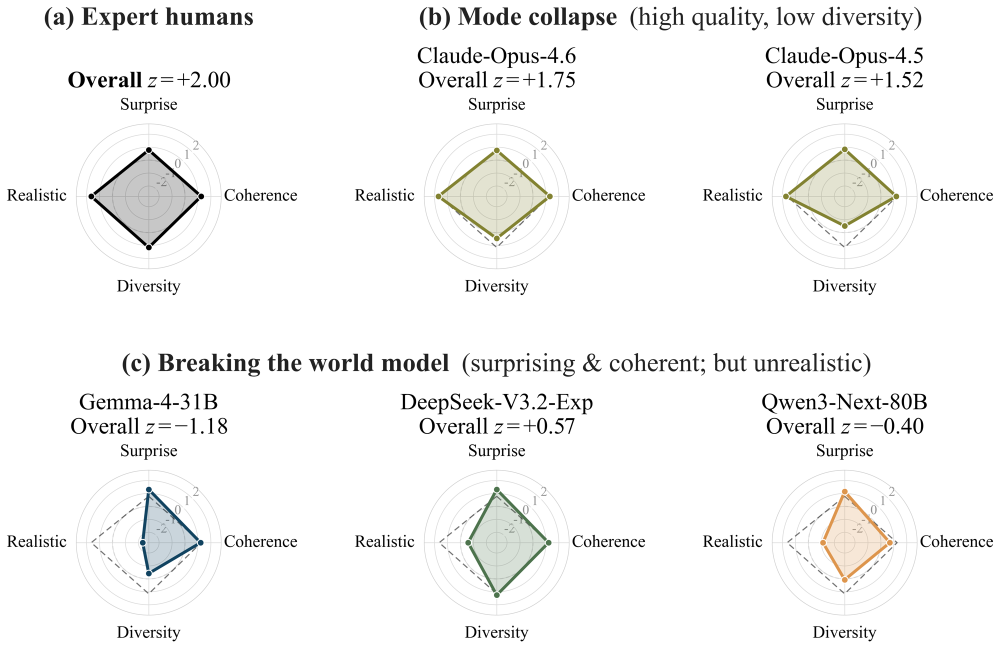
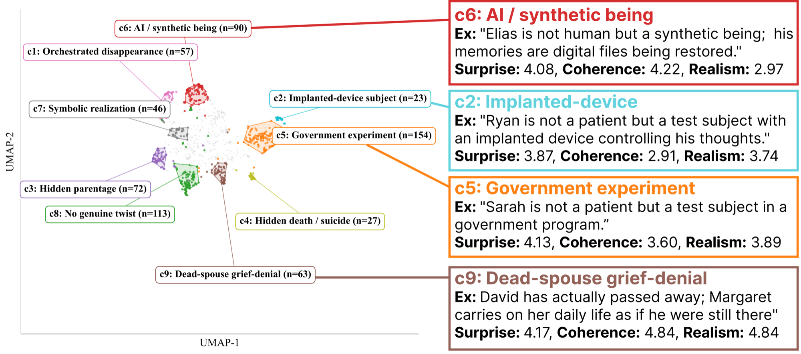
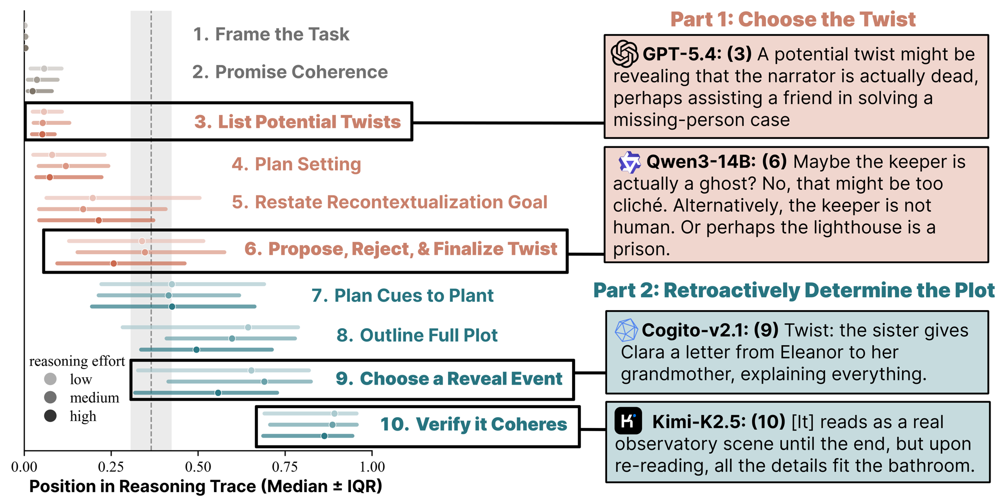

📖
Choose a source, then a story.
Benchmarking Transformational Creativity in LLMs via Literary Plot Twists
Oral Sci-FM Workshop on the Scientific Understanding of Foundation Models · COLM 2026
Creativity has long been heralded as the pinnacle of human intelligence. It is no surprise, then, that considerable effort has gone towards assessing the creativity of large language models in recent years. A growing body of work shows that LLMs can realize forms of creativity, such as combinatorial creativity or divergent thinking, at or exceeding human levels, but may fail to surpass humans at more complex types of creativity, especially in scientific domains.
Indeed, different forms of creativity vary widely in the complexity required to realize them. In the cognitive science literature, a popular categorization of creative processes is Boden's distinction between combinatorial, exploratory, and transformational creativity. Combinatorial creativity involves making unfamiliar combinations of familiar ideas, such as combining ingredients to form a new recipe. Exploratory creativity, meanwhile, presupposes an existing set of rules and constraints, called a conceptual space, that one can follow to discover or create something new, such as inventing a new chess opening.
Lastly, transformational creativity is the most radical but complex type of creativity, one that involves deliberate restructuring of a conceptual space. A clear example of this is the invention of non-Euclidean geometry, in which a single assumption (the parallel postulate) was modified to elicit a radically transformed space. Although transformational creativity has historically underpinned major scientific, technological, and artistic breakthroughs, it has been overlooked by the LLM benchmarking landscape due to the challenge of reducing such a complex ability into a self-contained and measurable task.
Resolving this gap in the benchmarking landscape, we establish the first large-scale benchmark of Transformational Creativity for LLMs, challenging models to generate a diverse set of surprising, coherent, and realistic literary plot twists (TwistBench). Literary plot twists require modifying or restructuring conceptual elements established by the story, satisfying the definition of transformational creativity as modifying an existing conceptual space. In particular, writing a story itself supplies the conceptual space, and then the plot twist is a single, unambiguous event that restructures the conceptual space. We administer TwistBench to a large set of 71 LLMs and find that humans rank first overall above all 71 LLMs tested, though for one model, elaborate prompting strategies such as in-context regeneration raise its performance to match human scores.

Our benchmark assesses the ability for LLMs to write a diverse set of stories with surprising, coherent, and realistic plot twists.
We evaluate a large set of 71 LLMs from 19 providers, ranging from small open-weight models (e.g. Llama-3.2-3B) to the latest frontier systems (e.g. Claude Opus 4.8, GPT-5.5). Each model is asked to write a complete short story containing a plot twist. We sample each model at three temperatures (0.9, 1.0, 1.2) with ten samples each (up to 30 stories per model, averaged across temperatures during overall scoring) and constrain the length to 2,000–3,000 words — a range that surrounds the ~2,500-word median of the human stories, mitigating story length as a confounding variable.
Write a complete short story (roughly 2,000–3,000 words). The story must contain a plot twist: a late reveal that makes the reader re-interpret earlier events in a new light, yet is consistent with everything that came before. In hindsight it should feel prepared, not arbitrary. Choose your own subject and characters. Do not announce or explain the twist. Write only the story, no title or commentary.
Creative products are typically evaluated according to their surprise, novelty, and utility. In the context of literary surprise, specifically, it is standard to invoke scoring dimensions surprise, coherence, consistency, and divergence, which we broadly adopt as inspiration here. Given a story T, we assess the following dimensions via Likert scales:
How drastically must one reinterpret earlier story elements after the plot twist?
After the plot twist, do earlier story elements still hold together? Is the story still logically consistent?
Does the plot twist involve impossible elements (real ghosts, magic, time travel, sentient AI, aliens) that violate the notion of literary “fair play”?
To score each dimension in practice, we use a three-judge ensemble (Claude Sonnet 4, GPT-4o, and Gemini 2.5 Flash) aggregated per dimension by the median and using a fixed rubric. Moreover, to mitigate self-preference bias in LLM-as-a-judge, the three judges are separate from the 71 LLMs evaluated as part of the benchmark results. The reliability of the three judges over all n = 2,035 stories, as given by the intra-class correlation coefficient ICC(2,k), is good-to-excellent on every dimension: realism at 0.91, surprise at 0.88, and coherence at 0.79.
Since diversity is a crucial aspect of creativity, and given that LLMs have a documented tendency to homogenize on open-ended tasks, we also measure diversity over the set of a model's plot twists. Given a set of n stories 𝒯 = {T1, T2, …, Tn} and a function that maps a story to a concise summary of its twist f : T → W, we compute the average embedding dissimilarity among these twists:
f is gpt-4o-mini prompted to summarize each story's twist in one sentence;
φ is the text embedding model all-mpnet-base-v2.
Consistent with prior tests and benchmarks of LLM creativity that reward novelty only when it is sufficiently appropriate, we treat realism as a constraint, rather than its own separate dimension, such that a story's surprise and coherence only count when the story is fully realistic (i.e. Real(T) = 5). The surprise comes from recontextualizing the world the reader was already given, not from importing new rules into it — the notion of literary "fair play." Resolving a story by declaring the ward a dream or a simulation is also surprising, but it does not restructure that space: it discards it for a new one with different rules, and admits a trivial shortcut, since any story can be made "surprising" by revealing that none of it was real.
Then, given a set of n stories 𝒯 generated by a model (or human) m, we define the transformational creativity score as the average z-score of each dimension over the pool of all models:
The z-scores in the table below are taken over the pool of all 72 evaluated sources (the 71 models plus the human gold set), so Overall reads as a within-pool standard score: 0 is the pool average, +1 is one standard deviation above it.
Human writers achieve the highest transformational creativity scores at z = +2.00 overall. Notably, this is not due to winning on any individual dimension, but instead through a balanced profile overall. Click a column header to sort; the human row is highlighted throughout, and clicking any row opens that source in the story explorer.
| # | Source | Overall (z) | Surpriseg | Coherenceg | Surprise | Coherence | Realism | Diversity | n |
|---|
Every story in the benchmark, in full. Pick a source on the left, then a story to read it alongside the judges' scores and the extracted setup/reveal. LLM stories are labelled with the sampling temperature they were drawn at; human stories are public-domain works.
📖
Choose a source, then a story.
Human writers achieve the highest transformational creativity scores at z = +2.00 overall, with surprise: +0.78 (rank 14/71), coherence: +1.25 (rank 3/71), diversity: +1.15 (rank 9/71), and realism: +1.64 (rank 5/71). Notably, this is not due to winning on any individual dimension, but instead through a balanced profile overall. A small set of frontier models score just below humans in overall scores, with Claude-Sonnet-4.5 at z = +1.9 overall, Claude-Sonnet-4.6 at z = 1.8, and Claude-Opus-4.6 at z = +1.7, but performance quickly drops starting at rank 5/71. We observe two consistent failure modes among models that illustrate why LLMs underperform expert humans.

Although the Claude Sonnet family scores just under expert human writers, Claude-Opus-4.5 and Opus-4.6 suffer from a lack of diversity. Although these models generate plot twists that are as surprising, realistic, and coherent as human writers, they fail to generate a diverse set of high quality stories, consistent with broader findings that many post-training techniques tend to reduce output diversity. Concretely, 10 of Claude Opus 4.5's 30 stories collapse onto a single reveal cluster, (c9) dead-spouse grief-denial: a loved one is secretly long dead and the protagonist carries on in denial. Each story is surprising, coherent, and realistic, but the set of such stories is not diverse.

Transformational creativity involves the intentional breaking of some regularities or rules, while leaving others intact. Concern has been raised over whether today's models learn representations that support this careful ability. Accordingly, we find that a subset of models surpasses expert human writers in writing surprising and coherent stories, but only by giving unrealistic plot twists. For example, Gemini 2.5 Pro resolves one story by revealing that the caretaker Elias "is not human but a synthetic being," and DeepSeek-V3.2-Exp ends another with its narrator meeting "a perfect duplicate of himself" rather than the alien he expected, which scores 1/5 on realism. This failure mode is consistent with related findings that LLMs struggle to maintain "fair play" when writing mystery short stories.
Prompting strategies. We test two prompting strategies used in prior work. Be creative appends an instruction to the task prompt to avoid clichéd or predictable twists. In-context regeneration generates a model's stories sequentially, provides a one-sentence summary of the twists it has already written, and requires the next twist to be distinct from all previous ones. While Be creative prompting actually degrades overall performance, in-context regeneration leads a single model (Claude-Sonnet-4.5) to reach the human ceiling on the strength of its diversity gain alone. This suggests that principled use of test-time compute can enhance transformational creativity.
Reasoning effort. We also vary reasoning levels for a set of models with controllable thinking effort. We find that increasing thinking effort slightly improves overall performance, though models still tend to underperform expert humans. Moreover, the underlying creative process is itself largely invariant to thinking effort.
Although creativity can be attributed to both products and processes, most studies of LLM creativity concentrate analysis on the final products rather than the processes that generated them. To analyze the creative processes employed by models on this task, the authors read a sample of reasoning traces among the 207 total traces obtained from the 9 models with controllable thinking levels and cataloged 10 recurring steps models made.
Curiously, models separate the divergent and convergent thinking part of the storywriting process: during Part 1: Choose the Twist, models list potential plot twist choices, sketch preliminary expository details, and often reject plot twists that are deemed "too cliché" based on a gut feeling. Afterwards, during Part 2: Retroactively Determine the Plot, models construct the story by planning cues to plant, outlining the full plot, choosing a reveal event, and verifying that prior story details remain intact. Even as reasoning effort is scaled from low to medium to high, the process remains remarkably homogeneous, with every model fixing the plot twist first, then proceeding to reverse engineer the story details.

@inproceedings{schapiro2026twistbench,
title = {{TwistBench}: Benchmarking Transformational Creativity in {LLM}s via Literary Plot Twists},
author = {Schapiro, Samuel and Gladstone, Alexi and Ji, Heng and Beaty, Roger E.},
booktitle = {Workshop on the Scientific Understanding of Foundation Models (Sci-FM) at COLM},
year = {2026},
note = {Oral presentation}
}